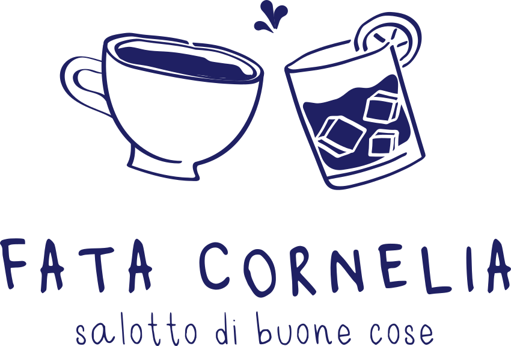
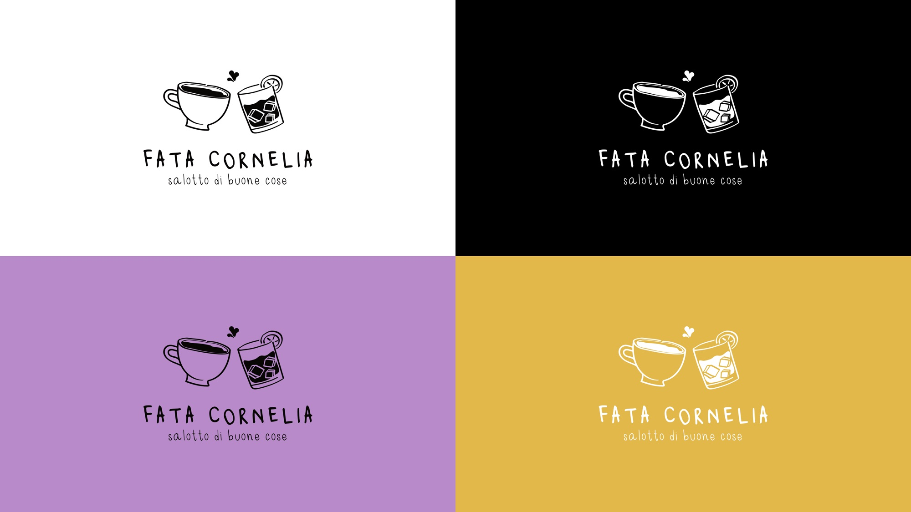
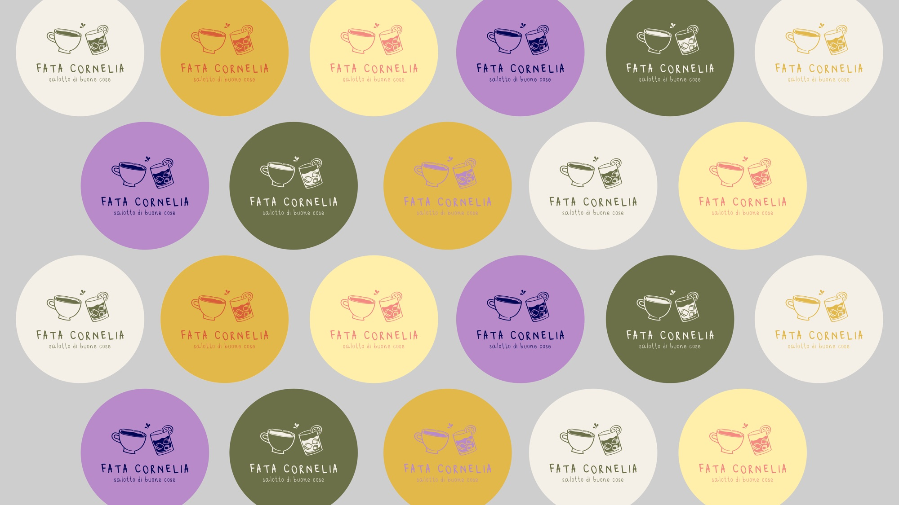
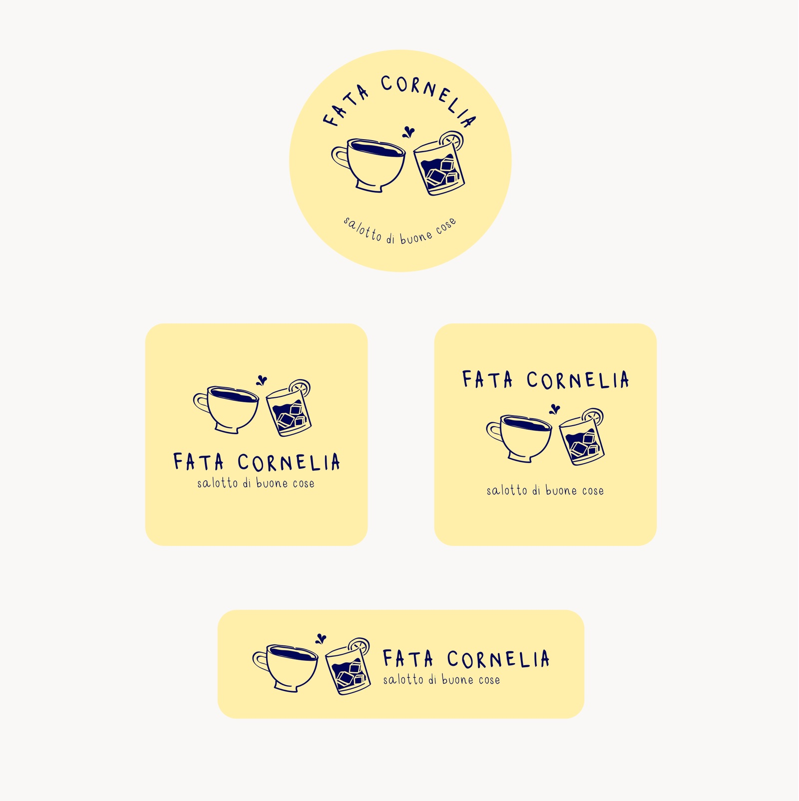

06//
Fata Cornelia
Visual identity for Fata Cornelia, salotto di buone cose: a tea room in Oristano with a selection of quality artisanal products.

the brief
The goal was to turn into graphic form an experience made of calm, care and authenticity.
the logo
A hand-drawn pictogram sums up the two sides of the place: on one side tea, in its most classic form; on the other, a glass with ice for its more dynamic, contemporary soul, the cocktail bar.
The lettering was drawn by hand by the owner, Federica Ciusa, to make the brand more authentic and personal. The result is a warm, rustic and welcoming identity that feels familiar and handmade from the first glance.

colours
The logo works in one colour on a palette of soft, natural tones: cream, butter, mustard, lilac and olive, plus black and white.
- cream
- butter
- mustard
- lilac
- olive


versions
A round badge, two square layouts and a horizontal version cover every use, from labels and coasters to boxes and signage.


credits
Lettering by Federica Ciusa, owner of Fata Cornelia. Logo and visual identity by Sara Seu.
Visit Fata Cornelia: Instagram, Facebook, Google Maps